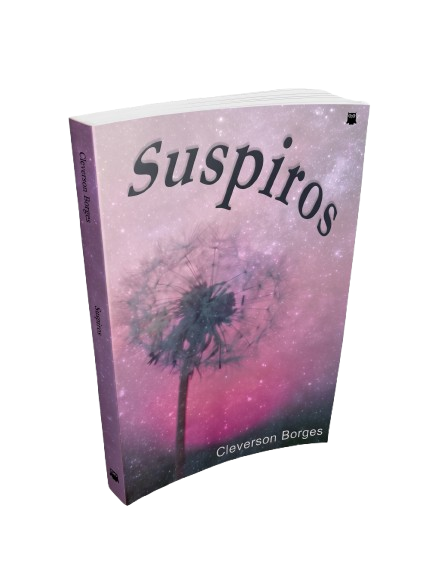

118 suspiros em forma de poesia — sobre amor, perda, fé e recomeço.

Moinho de versos movido a vento em noites de boemia
Vai vir o dia quando tudo que eu diga seja poesia
Suspiros é uma coletânea de 118 poemas e reflexões que nascem do que há de mais simples e mais profundo em nós.
Cleverson Borges transita entre o amor e a dor, a dúvida e a fé, os ciclos de morte e recomeço que atravessamos sem perceber — versos escritos com verdade, sobre o que significa amar, perder, duvidar de si mesmo e, ainda assim, seguir espalhando luz para quem está ao redor.
A beleza crua do sentir e as marcas que moldam nossa história.
O equilíbrio entre os questionamentos internos e a esperança diária.
A força para renascer após os ciclos de encerramento e seguir adiante.
Versos escritos com verdade,
sobre o que significa amar, perder,
duvidar de si mesmo e,
ainda assim,
seguir espalhando luz.
Leitura imediata no celular, tablet, computador ou Kindle.
Sinta o toque do papel e guarde a poesia na sua estante.
Assim que o pagamento for confirmado, você receberá um link de download direto no seu e-mail para baixar o e-book nos formatos PDF, ePub e MOBI.
Sim! O arquivo enviado é compatível com qualquer dispositivo, incluindo Kindle, iPad, Kobo, Android e iPhones.
Você possui 7 dias de garantia incondicional. Se por qualquer motivo os versos não tocarem seu coração, basta solicitar o reembolso que devolveremos 100% do seu investimento.